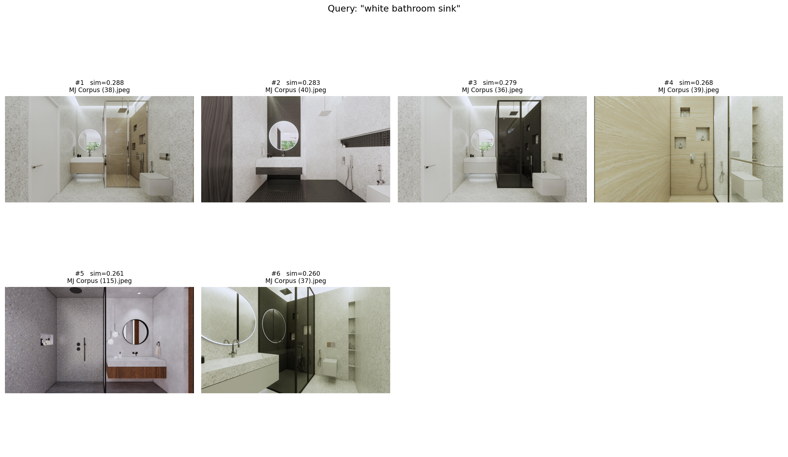
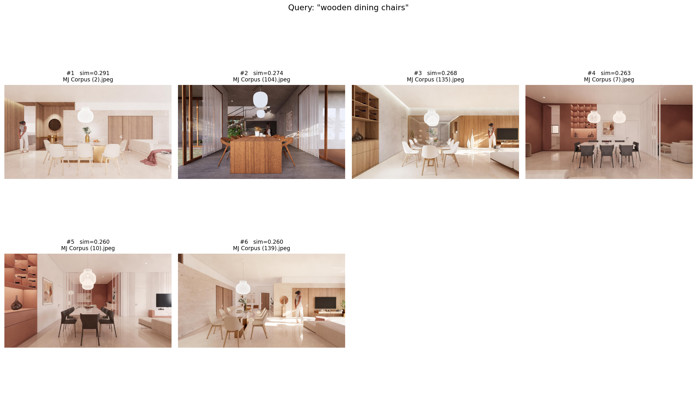
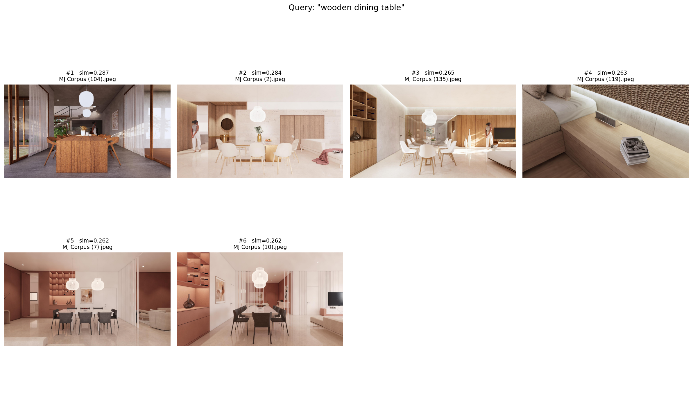

Query 1 of 3 — “white bathroom sink”
Query 2 of 3 — “wooden dining chairs”
Query 3 of 3 — “wooden dining table”ENTRY 01Strong - 3× replicated
Bag-of-words material binding
“white bathroom sink” · “wooden dining chairs” · “wooden dining table”
Wrong materials consistently outranked the correct ones - glass and marble tables beat the actual wooden one. CLIP matches "wooden" and "table" as loose, separable tokens rather than binding the attribute to the object, consistent with the ARO benchmark's findings on compositional failure.